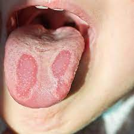

Burning mouth syndrome

SYMPTOMS:
BMS can be mild or severe, and vary from person to person. Some people describe the burning feeling as comparable to the burning sensation of eating food that’s too hot. Others say that it feels scalding. In milder cases, BMS may cause slight tingling or numbness.
CAUSES
There isn’t one specific cause of BMS.
TREATMENTS
If your doctor finds that there’s a specific medical condition causing your BMS, stopping the burning sensation involves treating the underlying health problem. Some of these include:
- Acid reflux: Medication to neutralize stomach acid may help relieve symptoms of BMS.
-
Dry mouth: If you have dry mouth, ask your doctor about products to increase saliva production, or take vitamin shots or supplements for a vitamin deficiency.
-
Mouth infection: You doctor can also prescribe medication to treat an underlying oral infection, or a pain reliever.